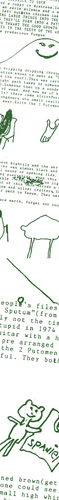

| |
TRUE TALES OF LOVE AND HATE
| |
The True Tales project is now closed but the glorious evidence still abounds - you can check it out online and in print!
| |
Earlier this year, noise and 'making noise' teamed up to present TRUE TALES OF LOVE AND HATE - an online zine that looks at the ups and downs of life and love in the 21st century.
Young people across the country were invited to submit original work (words, pictures, scribbles, rants, diary entries, songs, movies, animation and more) that dealt with the theme "true tales". The word spread quickly and within a few short weeks we had received hundreds of submissions from people with all manner of tales to tell. You can still check out the True Tales e-zine at noise.net.au/truetales.
In early 2002 we decided to collect together a selection of works from the e-zine into a special edition print zine of the same name. Copies of the print zine were distributed across the country in April and May 2002. If you'd like a copy of True Tales of Love and Hate just ping your name and postal address to admin@noise.net.au and we'll make sure you get a copy.
|
|
|